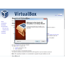
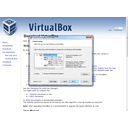
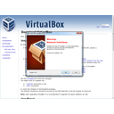
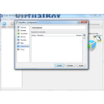
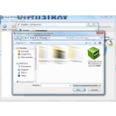
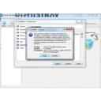

Pràctica 1. Instal·lació VirtualBox
L'objectiu d'aquest mòdul és introduir a l'alumne en la utilització de l'entorn de virtualització VirtualBox.
VirtualBox és un programa amb el qual és possible simular un ordinador personal i fer instal·lacions de sistemes operatius o sistemes convidats dins del sistema operatiu principal o sistema amfitrió. VirtualBox simula, a través de programari, un PC amb la seva pròpia BIOS, placa de xarxa, disc dur, placa de so, etc. la qual cosa fa que aquest virtualitzador sigui un entorn adient per fer proves amb altres sistemes operatius.
Entre els sistemes operatius suportats (en mode amfitrió) hi ha GNU/Linux, Mac OS, Windows i Solaris/OpenSolaris. A dins d'aquests sistemes amfitrions, és possible virtualitzar, entre d'altres, els sistemes convidats següents: BSD, GNU/Linux, OS/2, Windows i Solaris.
Actualment VirtualBox depen d'Oracle, la seva pàgina oficial és: https://www.virtualbox.org/ i podeu descarregar la versió adeqüada per el vostre sistema operatiu a: https://www.virtualbox.org/wiki/Downloads
A continuació veurem pas a pas com podem fer la instal·lació a windows.
Descàrrega de VirtualBox
Si mireu les imatges de sota, veureu que tant sols hem de fer 4 pases per descarregar el virtual Box al nostre ordinador.
Pas 1. Entrem a la web de Virtual Box. https://www.virtualbox.org.
Pas 2. Anem a l'apartat descàrregues (Download).
Pas 3. Seleccionem la última versió estable per el nostre S.O.
Pas 4. Acceptem la descàrrega.
De la mateixa manera podeu fer la descarrega de les extensions (VirtualBox x.x Oracle VM VirtualBox Extension Pack).
Si premeu a sobre les imatges les podreu veure en gran.
Instal·lació VirtualBox
Tot seguit passem a fer la instal·lació. A part de les pases descrites, entre mig ens poden sortir alguns cuadres de seguretat que ens demanen la confirmació de la instal·lació.
La instal·lació consta de dos pases, la instal·lació del programa, i les extensions, que ens facilitaran el treball més endavant.
Pas 1. Anem a la carpeta on hem descarregat la nostra versió, normalment Descàrregues.
Pas 2. Premem dos cops a sobre del programa per inisciar la instal·lació.
Pas 3. Anem acceptan les opcions per defecte, fins que acaba la instal·lació.
Tot seguit farem la instal·lació de les extensions.
Pas 4. Posarem en funcionament el programa.
Pas 5. Anem al menú Fitxer, i triem Preferències. Al cuadre que s'obre premem a sobre de Extensions i a la dreta trobem un quadre amb un triangle per afegir les que hem baixat abans.
Si premeu a sobre les imatges les podreu veure en gran.
Galeria d'imatges
- Pas 1. Anem a la carpeta on hem descarregat la nostra versió, normalment Descàrregues.

Pas 2. Premem dos cops a sobre del programa per inisciar la instal·lació.
Pas 3. Anem acceptan les opcions per defecte, fins que acaba la instal·lació.
Confirmem que hem acabat. Pas 4. Posarem en funcionament el programa.
Pas 4. Posarem en funcionament el programa.
Pas 5. Anem al menú Fitxer, i triem Preferències. Al cuadre que s'obre premem a sobre de Extensions i a la dreta trobem un quadre amb un triangle per afegir les que hem baixat abans.
Busquem a la carpeta que les tenim guardades
Acceptem la llicència i acabem la instal·lació


Llicenciat sota la Llicència Creative Commons Reconeixement NoComercial CompartirIgual 4.0